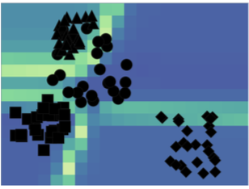

Visual Analysis of Degree-of-Interest Functions to Support Selection Strategies for Instance Labeling

EuroVA (2019)
Authors
Jürgen Bernard, Marco Hutter, Christian Ritter, Markus Lehmann, Michael Sedlmair, Matthias Zeppelzauer
Materials
Abstract
Manually labeling data sets is a time-consuming and expensive task that can be accelerated by interactive machine learning and visual analytics approaches. At the core of these approaches are strategies for the selection of candidate instances to label. We introduce degree-of-interest (DOI) functions as atomic building blocks to formalize candidate selection strategies. We introduce a taxonomy of DOI functions and an approach for the visual analysis of DOI functions, which provide novel complementary views on labeling strategies and DOIs, support their in-depth analysis and facilitate their interpretation. Our method shall support the generation of novel and better explanation of existing labeling strategies in future.